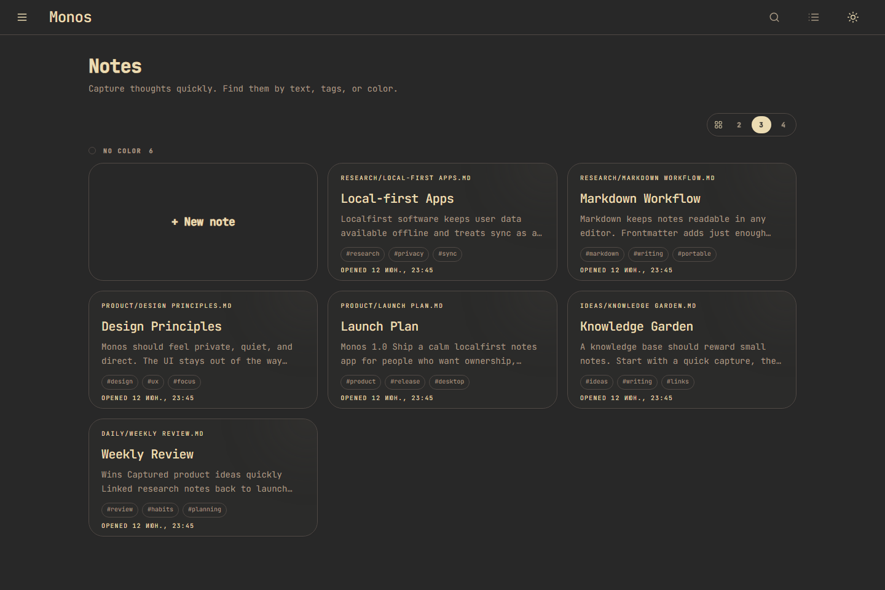
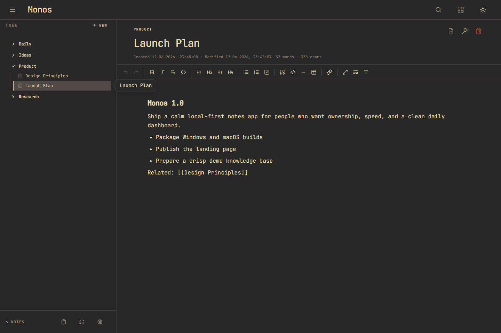
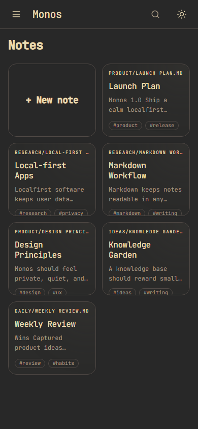

Your notes stay readable outside the app. SQLite is only a rebuildable index.
Local-first notes for focused thinking
Your knowledge base, on your machine.
Monos is a desktop notes app built around Markdown, wiki links, fast search, and optional Git sync. It keeps your notes portable while giving you a polished workspace for daily thinking.

Built for private, durable notes.
Monos treats files as the product. The interface is there to make those files easier to create, connect, search, and sync.
Connect notes with `[[links]]` and use backlinks to navigate your knowledge graph.
User data lives in the operating system's app data directory, not in the source repo.
A compact dashboard helps you scan recent notes and create new ones quickly.
Search titles, tags, and body content with highlighted matches.
Use your own repository for backup and history when you want it.
Real app screens, seeded with a demo knowledge base.
These screenshots are captured from the current Monos UI using temporary Markdown notes created only for the website.


Simple architecture, clear ownership.
Electron hosts a local Express API and a Svelte frontend. Markdown files remain the source of truth.
01
Electron resolves the user data directory and starts the local backend.
02
Express reads and writes Markdown files and updates the SQLite index.
03
Svelte renders the board, editor, search, tree, and settings screens.
04
Git sync can commit and push the user's notes directory when configured.